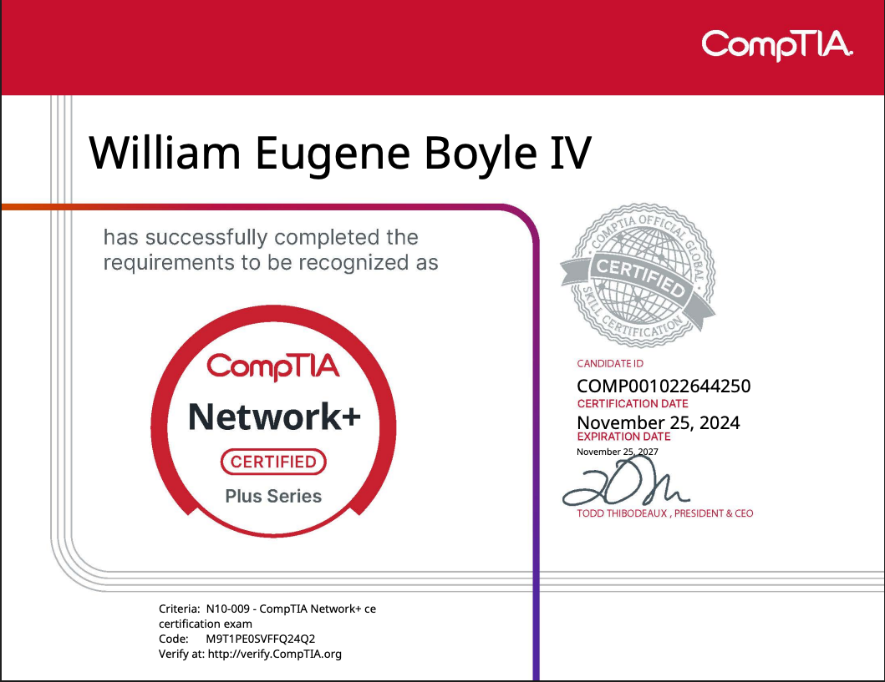

Technical Competencies
With my CompTIA A+ and Network+ certifications, I have built a solid mastery of troubleshooting, systems administration, and infrastructure management.

Education
BS in Cybersecurity - Brigham Young University - Idaho